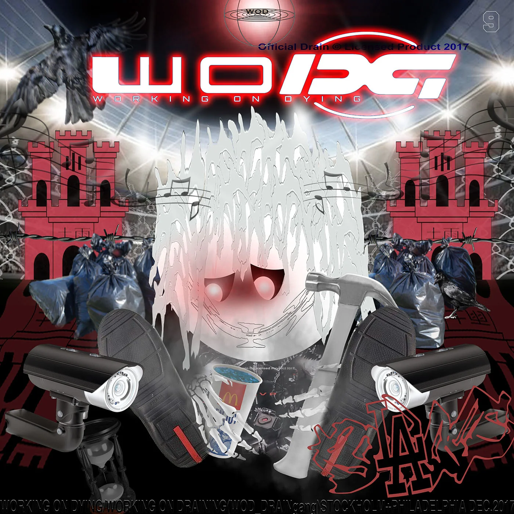

Working on Dying is Bladee 's second solo mixtape. It was made in collaboration with the Philadelphia, US-based producer collective Working On Dying, who are the namesake of the mixtape, and was released by YEAR0001. The mixtape also features contributions from Yung Lean, Ecco2k and Black Kray.
1. Redlight Moments 3:09
2. Lordship (feat. Yung Lean) 2:28
3. Knightsbridge 2:00
4. Backstr€€t Boys (feat. Black Kray) 2:24
5. Under Your Spell 1:45
6. D-925 2:35
7. Gatekeeper 3:16
8. Cherry Bracelets (feat. Ecco2k & Yung Lean) 2:58
9. Best Buy 1:56
Total length: 22:32